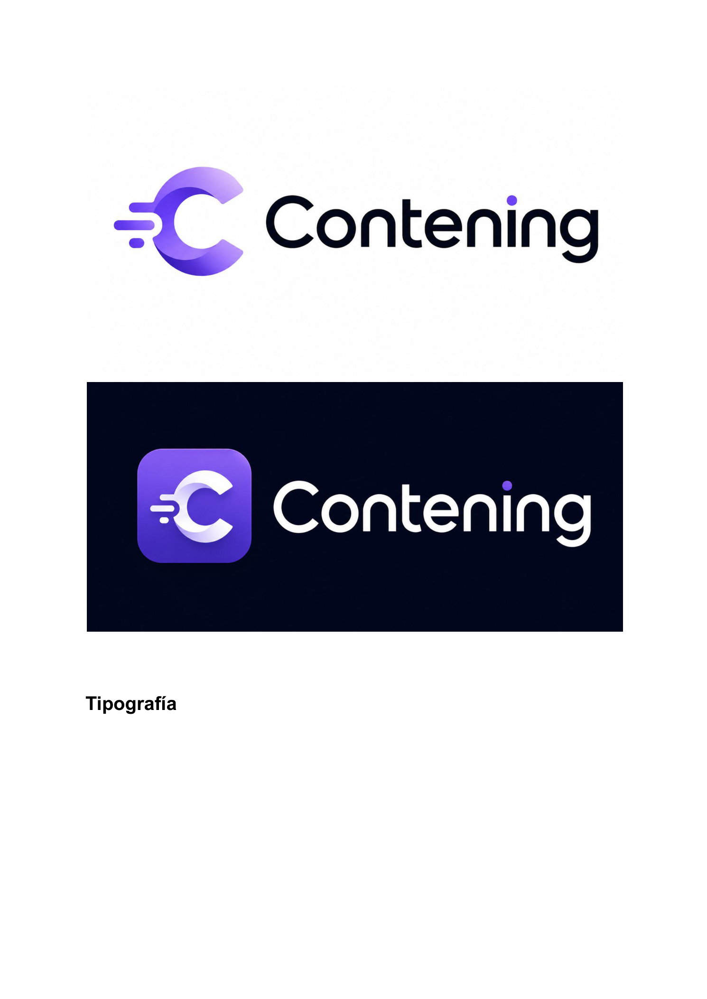

Caso de estudio · Branding · Trabajo final Módulo 5, INESDI
Identidad de marca para Contening: el porqué antes que el logo
Entregable final del Módulo 5, aplicado a Contening, mi propio SaaS. Antes de diseñar nada, definí qué defiende la marca y qué rechaza — el logo es la consecuencia de esa decisión, no el punto de partida.
Mi parte
Entregable individual completo
Herramientas
IA generativa de imagen · copywriting de marca
Cliente
Contening — SaaS propio, 49-99 €/mes
Estado
Fase 1 (voz y logo) cerrada · sistema visual en curso
Contening podía describirse de muchas formas: "otra IA de redes sociales", "una agencia barata", "una herramienta más de marketing". Ninguna de esas es la que quería defender. El trabajo real de este entregable no fue elegir colores, fue decidir qué tipo de empresa es Contening antes de que nadie la vea.
DecisiónContening no compite por precio bajo. Si un cliente busca lo más barato, no es el cliente objetivo — se declara explícitamente en los valores de marca, no como eslogan sino como criterio para rechazar negocio.
Misión, visión y valores
Misión: liberar a las pymes con contacto directo con cliente final de la carga semanal de crear contenido de redes sociales, sin que tengan que elegir entre pagar una agencia que no pueden permitirse o hacerlo ellos mismos con menos calidad de la que necesitan.
Visión: ser el estándar con el que cualquier pyme sin equipo de marketing mantiene una presencia digital profesional y consistente — tan simple como aprobar un mensaje de WhatsApp cada lunes.
Calidad de agencia, sin concesiones. Nunca se compite por precio bajo a costa de la calidad del contenido.
Especificidad por sector, no genérico. Un restaurante y una clínica no necesitan el mismo contenido — cada plantilla de sector es el diferencial, no un detalle técnico.
El tiempo del dueño del negocio es sagrado. Si una función exige más de 10 minutos de aprobación semanal, está mal diseñada.
Honestidad sobre lo que el producto hace hoy. No se promete automatización que no existe en el plan contratado.
Control humano, no caja negra. El cliente aprueba cada semana; no se toman decisiones de marca sin su visto bueno.
Elevator pitch
"¿Cuántas veces te has sentado a las once de la noche a improvisar un post porque no sabías qué publicar esta semana? Eso le pasa cada semana a más de un millón de pequeños negocios en España que saben que necesitan estar en redes pero no tienen ni el tiempo ni el presupuesto para pagar una agencia, que cuesta entre 800 y 3.000 € al mes. Contening resuelve eso: un agente de IA que, en un onboarding de 15 minutos, aprende la identidad real de tu marca y genera tu contenido semanal de forma autónoma, adaptado a tu sector. Tú solo dedicas 10 minutos a la semana a aprobarlo por WhatsApp. Somos el criterio de una agencia, a una fracción del coste."
Sistema de logo
Icono de app (fondo degradado morado, "C" con trazo de movimiento) y lockup horizontal con wordmark sobre fondo oscuro, pensado para funcionar tanto en el icono de una app móvil como en cabeceras de web y documentos.

Wordmark y lockup horizontal del logo de Contening.
Límites
El sistema visual completo (paleta de color documentada, tipografía definida, jerarquía de aplicaciones) quedó sin desarrollar en este entregable — la fase que sí se cerró fue posicionamiento, voz de marca y logo.
Es un entregable académico sobre mi propio proyecto real, no una validación de marca con usuarios.
Esta brecha es justo lo que después resolví con la skill branding que construí en Claude Code, ya con proceso de arquetipo de marca e identidad verbal/visual completa.